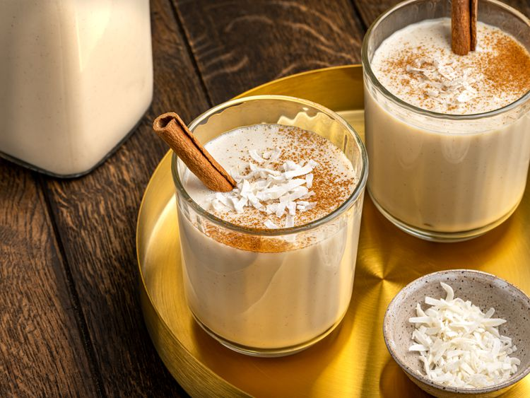

Puerto Rican Coquito

Description
This Puerto Rican coquito recipe makes a blended rum-and-coconut drink for a rich, creamy, and delicious treat.
My grandmother and mother used to prepare it during the Christmas season as I was growing up, and the tradition
has stayed with me.
Ingredients
- 2 (15 ounce) cans coconut milk
- 1 (14 ounce) can sweetened condensed milk
- 1 cup dark rum
- ½ cup water
- ½ teaspoon ground cinnamon
- 1 pinch salt
Directions
- Add coconut milk, sweetened condensed milk, rum, water, cinnamon, and salt to a blender.
- Blend until well combined; refrigerate for at least 1 hour, or until ready to serve.
Home